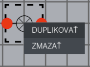

Graphical User Interface
The graphical user interface looks like this:

The colored boxes frame different parts of the simulator. The concrete parts are:
- Orange: Main menu
- Blue: Panel with main tools
- Red: Panel with simulation objects
- Yellow: Workbench
- Green: Object properties
- Pink: Information and error output
Main Menu
Main menu consists of the following:
- File
- Edit
- View
- Help
File

The file menu consists of the following:
- New project - creates a new project
- Close project - clears the workbench
- Open - open a saved project
- Save - save to current workbench
- Save as - save to current workbench to a different file
- Exit - exits the program
Edit

The edit menu consists of the following:
- Duplicate - duplicates the selected simulation element
- Delete - deletes the selected simulation element
- Run - runs the simulation
- Pause - pauses the simulation
- Setting - opens the application settings
View

The View menu consists of the following items to show/hide editor windows:
- Object properties - window used to set different properties for exisitng simulation elements
- Tools - window containing available simulation elements
- Debug - Windows used to output information and error messages
Help

The Help menu consists of the following:
- About - shows information regarding the application, and the current version
- Manual - show the manual for using the application. Can also be opened with the corresponding toolbar button
- Examples - show a panel containing button to load example projects
Context Menu

The Context menu opens with the right mouse button click and consists of the following:
- Duplicate - duplicates the selected simulation element
- Delete - deletes the selected simulation element
Toolbar panel
The toolbar panel consists of icons having different functionality:
- New project - creates a new project
- Open - open a saved project
- Save - save to current workbench
- Undo - undo the last action
- Redo - redo the last undo action
- Run - runs the simulation
- Pause - pauses the simulation
- Zoom in - zooms the workbench in
- Zoom out - zooms the workbench out
- Rotate right - Rotates the selected simulation element or a group of simulation elements clockwise
- Rotate left - Rotates the selected simulation element or a group of simulation elements counter-clockwise
- Delete - deletes the selected simulation element
- Duplicate - duplicates the selected simulation element
- Export - generates a HTML export of the workbench
- Manual - show the manual for using the application.